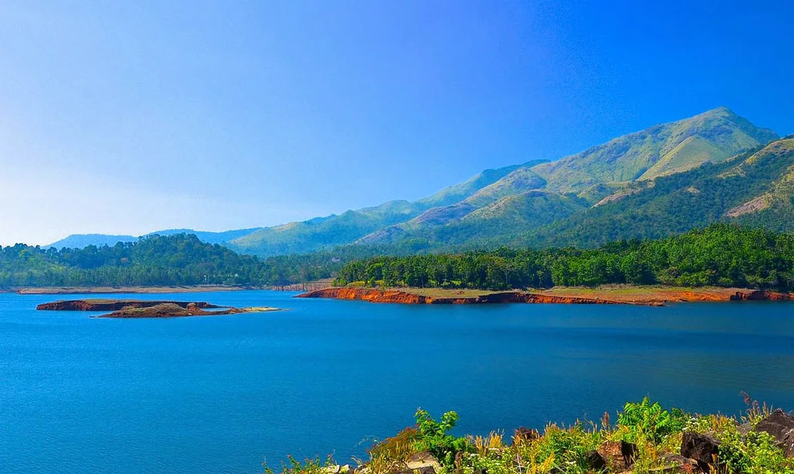
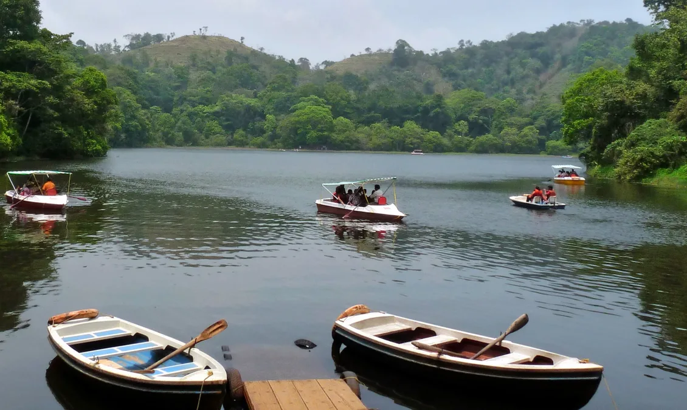
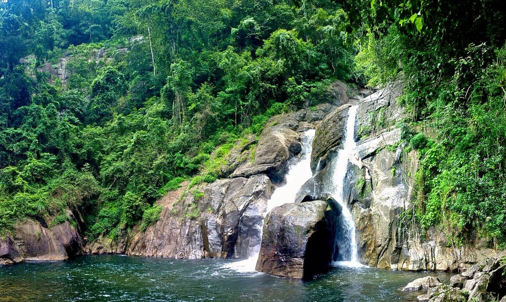

Wayanad is a district in the north-east of Indian state Kerala with administrative headquarters at the municipality of Kalpetta. It is the only plateau in Kerala.The Wayanad Plateau forms a continuation of the Mysore Plateau, the southern portion of Deccan Plateau. It is set high in the Western Ghats with altitudes ranging from 700 to 2100 meters .Vellari Mala, a 2,240 m (7,349 ft) high peak situated on the trijunction of Wayanad, Malappuram, and Kozhikode districts, is the highest point in Wayanad district. The district was formed on 1 November 1980 as the 12th district in Kerala, by carving out areas from Kozhikode and Kannur districts. An area of 885.92 km2 of the district is forested. Wayanad has three municipal towns—Kalpetta, Mananthavady and Sulthan Bathery.
Wayanad
Famous Spots

Edakkal Caves

Chembra Peak

Banasura Sagar Dam

Pookode Lake
